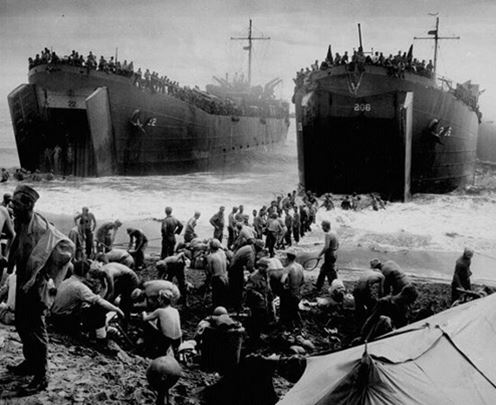
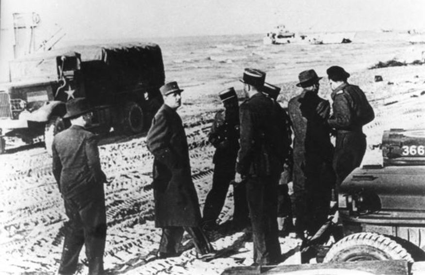
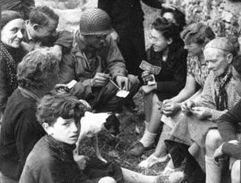
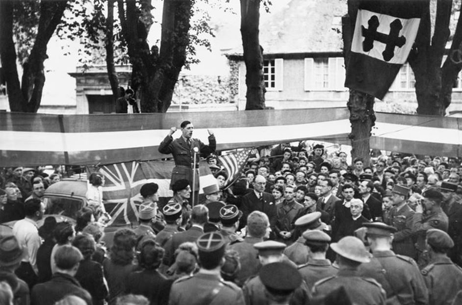

Comment Charles de Gaulle a barré la route à l’occupation américaine
par Marc KELLER
Dans l’histoire du Gaullisme, il y a des événements plus ou moins connus, d’autres anecdotiques. Mais ce qui s’est passé à Bayeux le 14 juin 1944 est essentiel pour la France.Si on n’en parle guère, c’est pour ne pas indisposer nos amis américains, qui n’ont pas le beau rôle dans cette affaire.
DE GAULLE ET ROOSEVELT
Entre Charles de Gaulle, chef de la France Libre et le président américain Roosewelt, les relations n’ont jamais été simples. Quelque part, et sans le dire, le général regrettait la frilosité des américains contre Hitler et le très grand retard de l’engagement des USA auprès des alliés. Quand il s’est agi de voler au secours de l’Amérique, la France ne s’est jamais fait attendre.
Que ce soit La Fayette pour libérer les USA du joug anglais, Charles de Gaulle lors de l’affaire des missiles de Cuba, ou encore Jacques Chirac après les attentats de 2001, nous avons toujours été les premiers à réagir et à être sur place…
Roosevelt avait une vision très négative de la France. Il avait été énormément déçu de voir que cette « grande puissance » soit incapable de tenir tête à l’Allemagne nazi. Ce qui entrainerait, tôt ou tard, il le savait, un engagement militaire de l’Amérique. Une idée qui lui déplaisait fortement : il préférait se cantonner à vendre des armes et des munitions aux belligérants.
Ceci étant posé, on comprend mieux que Roosevelt ne voulait pas entendre parler du turbulent de Gaulle et de sa France Libre. Pour lui la France n’existait plus depuis la signature de l’armistice de 1940 et il avait tout organisé pour occuper la France au moment de la reconquête de l’Europe continentale.
Dans sa vision manichéenne, une spécialité américaine, Roosevelt voulait voir en de Gaulle un apprenti dictateur, le futur Hitler français. Il n’en a jamais démordu. Même son fils a publié dans les années soixante un livre où il rappelait que son père avait raison, puisque de Gaulle avait fini par réussir à gouverner la France avec les pouvoirs absolus…
ÉCARTÉ DU DEBARQUEMENT
Cette opinion fermement ancrée chez Roosevelt a eu de nombreuses conséquences. Ainsi le général de Gaulle a été soigneusement tenu à l’écart des préparatifs du débarquement. Ce n’est que grâce aux services secrets de la France Libre qu’il était tenu au courant de ce qui se tramait.
Les Américains ont tenté de créer en France occupée leur propre réseau de renseignements, tout en utilisant ceux de la France Libre. Ce n’est qu’in extremis que Churchill a prévenu de Gaulle de la date et des modalités du débarquement.
Le général s’est alors battu comme un lion pour imposer au moins un Régiment français dans ce dispositif Ce sera la glorieuse 2ème DB du général Leclerc. Heureusement sur le terrain, et malgré un freinage permanent des initiatives françaises, cela se passait mieux. Le général en chef Dwight Eisenhower était un grand soldat, qui parlait le même langage que de Gaulle. Avec lui on pouvait « se parler entre hommes ».
Il n’empêche qu’à cette étape, il faut retenir que les USA avaient décidé de « libérer » la France sans les français. Ce qui est pour le moins étonnant, quand on sait le rôle déterminant qu’a joué la France Libre sur tous les théâtres d’opération : En Afrique, au Levant, dans l’ensemble des colonies et territoires français, mais aussi en métropole avec l’organisation de la Résistance.
L’AFFAIRE DE BAYEUX
De Gaulle ayant refusé d’avaliser un débarquement auquel il n’était pas convié, les relations étaient très tendues entre lui et les alliés en ce début du mois de juin 1944.
Il a néanmoins obtenu, avec l’appui d’un Churchill ulcéré et fatigué des « caprices » du chef de la France Libre, de pouvoir visiter le front le 14 juin 1944. C’est tout ce que de Gaulle demandait ! Et le voilà donc parti. Ayant effectué la traversée de Portsmouth à Courseulles-sur-Mer (secteur canadien de Juno Beach) sur le contre-torpilleur La Combattante des Forces navales françaises libres, de Gaulle se rend d’abord au quartier général de Montgomery, installé au château de Creullet dans la commune de Creully.

14 juin 1944, le général de Gaulle visite le front
Un Montgomery qui a reçu des instructions de Churchill. A savoir veiller autant que possible à ce que la visite de de Gaulle ne prenne pas un tour politique et ne contrecarre pas le projet américain de l’AMGOT (Allied Military Government of Occupied Territories). Ce plan qui enlevait à la France sa souveraineté et en faisait un territoire occupé, prévoyait même la mise en circulation d’une monnaie contrôlée par les américains et déjà imprimée !
De là le général et sa suite se rendent à Bayeux où Charles de Gaulle, encadré par le général Koenig et Maurice Schumann, la voix de la France Libre, fait un discours devant 2000 personnes venues l’écouter dans cette ville totalement sinistrée. Tout est soigneusement orchestré pour les photographes et les caméras. De Gaulle présente à la foule François Coulet, Commissaire régional de la république (équivalent d’un préfet de région) qui prend immédiatement ses fonctions.
Depuis Bayeux, promue capitale administrative de la France libérée, il est chargé de mettre en œuvre la transition administrative, avec le transfert de souveraineté des fonctionnaires mis en place par le régime de Vichy aux nouveaux responsables nommés par le GPRF (Gouvernement Provisoire de la République Française). Présent aux côtés du Général le 14 juin à Bayeux, Coulet s’y installe avec une équipe de collaborateurs. Il remplace dès le lendemain le sous-préfet vichyssois, Pierre Rochat, par le résistant Raymond Triboulet, secrétaire du Comité départemental de la Libération, et fait afficher dans les communes visitées par le Général cette proclamation : « Aux populations libérées. Le Gouvernement provisoire de la République française m’a confié la charge de le représenter et d’exercer les droits de la souveraineté française dans les territoires libérés de la région de Rouen. »

Allocution du Général de Gaulle à Bayeux
Et voilà le plan américain déjoué. Une fois de plus, grâce au général de Gaulle, la France conserve sa souveraineté et prend vraiment sa place au sein du groupe des alliés. Il est intéressant de noter combien il a été difficile pour le fondateur de la France Libre de faire accepter la voix de la France dans le concert des nations.
A ce niveau le « coup d’éclat de Bayeux » est un acte fondateur à haute valeur symbolique. Ce jour là Charles de Gaulle a pris tout le monde de vitesse et s’est imposé comme le dirigeant incontournable de la France libérée. En empêchant les américains de distribuer « leur fausse monnaie » il ne s’est pas fait que des amis. Mais il a agi pour la France. C’était son seul but.
Partager cette page